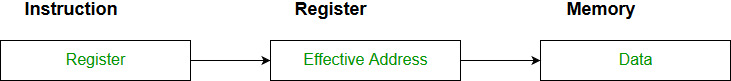

Addressing Modes– The term addressing modes refers to the way in which the operand of an instruction is specified. The addressing mode specifies a rule for interpreting or modifying the address field of the instruction before the operand is actually executed.
Addressing modes for 8086 instructions are divided into two categories:
1) Addressing modes for data
2) Addressing modes for branch
The 8086 memory addressing modes provide flexible access to memory, allowing you to easily access variables, arrays, records, pointers, and other complex data types. The key to good assembly language programming is the proper use of memory addressing modes.
An assembly language program instruction consists of two parts

The memory address of an operand consists of two components:
IMPORTANT TERMS
- Starting address of memory segment.
- Effective address or Offset: An offset is determined by adding any combination of three address elements: displacement, base and index.
- Displacement: It is an 8 bit or 16 bit immediate value given in the instruction.
- Base: Contents of base register, BX or BP.
- Index: Content of index register SI or DI.
According to different ways of specifying an operand by 8086 microprocessor, different addressing modes are used by 8086.
Addressing modes used by 8086 microprocessor are discussed below:
- Immediate mode: In immediate addressing the operand is specified in the instruction itself. In this mode the data is 8 bits or 16 bits long and data is the part of instruction.

Example: MOV AL, 35H (move the data 35H into AL register)
- Register mode: In register addressing the operand is placed in one of 8 bit or 16 bit general purpose registers. The data is in the register that is specified by the instruction.

Example: MOV AX,CX (move the contents of CX register to AX register)
- Register Indirect mode: In this addressing the operand’s offset is placed in any one of the registers BX,BP,SI,DI as specified in the instruction. The effective address of the data is in the base register or an index register that is specified by the instruction.
The 8086 CPUs let you access memory indirectly through a register using the register indirect addressing modes.MOV AX, [BX](move the contents of memory location s addressed by the register BX to the register AX) - Auto-increment mode: Effective address of the operand is the contents of a register specified in the instruction. After accessing the operand, the contents of this register are automatically incremented to point to the next consecutive memory location.(R1)+.Example:
Add R1, (R2)+ // OR
R1 = R1 +M[R2] R2 = R2 + d
Useful for stepping through arrays in a loop. R2 – start of array d – size of an element
- Auto-decrement mode: Effective address of the operand is the contents of a register specified in the instruction. Before accessing the operand, the contents of this register are automatically decremented to point to the previous consecutive memory location. –(R1)Example:
Add R1,-(R2) //OR
R2 = R2-d R1 = R1 + M[R2]
Auto decrement mode is same as auto increment mode. Both can also be used to implement a stack as push and pop . Auto increment and Auto decrement modes are useful for implementing “Last-In-First-Out” data structures.
- Direct Mode: The operand’s offset is given in the instruction as an 8 bit or 16 bit displacement element. In this addressing mode the 16 bit effective address of the data is the part of the instruction.

Example:ADD AL,[0301] //add the contents of offset address 0301 to AL
- Base addressing: The operand’s offset is sum of an 8 bit or 16 bit displacement and the contents of the base register BX or BP.BX is used as a base register for data segment ,and BP is used as a base register for stack segment.
Example:MOV AL,[BX+05]
//suppose the register BX contain 0301.The offset will be 0301+05=0306.Content of the memory location 0306 will move to AL.
- Indexed addressing mode: The operand’s offset is the sum of the content of an index register SI or DI and an 8 bit or 16 bit displacement.
Example:MOV AX, [SI +05]
- Based Indexed Addressing: The operand’s offset is sum of the content of a base register BX or BP and an index register SI or DI.
Example: ADD AX, [BX+SI]
- Based Indexed plus displacement addressing mode: In this mode of addressing the operand’s offset is given by offset=[BX or BP]+[SI or DI]+8 bit or 16 bit displacement.
-
Example:MOV AX, [BX+SI+05]
Branch Related addressing modes:
- Intrasegment Direct: The effective branch address is sum of 8 or 16 bit displacement and the current contents of IP(Instruction Pointer).It can be used with either conditional or unconditional branching.
- Intrasegment Indirect: The effective branch address is contents of register or memory location that is accessed using any of the data related addressing mode except immediate mode. It can be used only for unconditional branch instruction.
- Intersegment Direct: Replaces the content of IP with part of the instruction and the contents of CS with another part of the instruction. This mode is provide a way of branching from one code segment to another.
- Intersegment Indirect: Replaces the contents of IP and CS with the contents of two consecutive words in memory that are referenced using any one of the data related addressing mode except immediate and register modes.
Sample GATE Question
Match each of the high level language statements given on the left hand side with the most natural addressing mode from those listed on the right hand side.
1. A[1] = B[J]; a. Indirect addressing 2. while [*A++]; b. Indexed addressing 3. int temp = *x; c. Autoincrement
(A) (1, c), (2, b), (3, a)
(B) (1, a), (2, c), (3, b)
(C) (1, b), (2, c), (3, a)
(D) (1, a), (2, b), (3, c)Answer: (C)
Explanation:
List 1 List 2 1) A[1] = B[J]; b) Index addressing Here indexing is used 2) while [*A++]; c) auto increment The memory locations are automatically incremented 3) int temp = *x; a) Indirect addressing Here temp is assigned the value of int type stored at the address contained in X
Hence (C) is correct solution.


{kind=link}